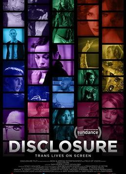
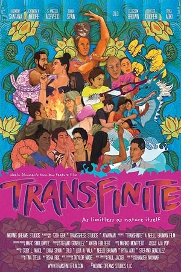
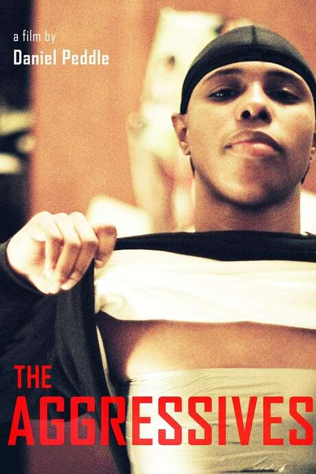
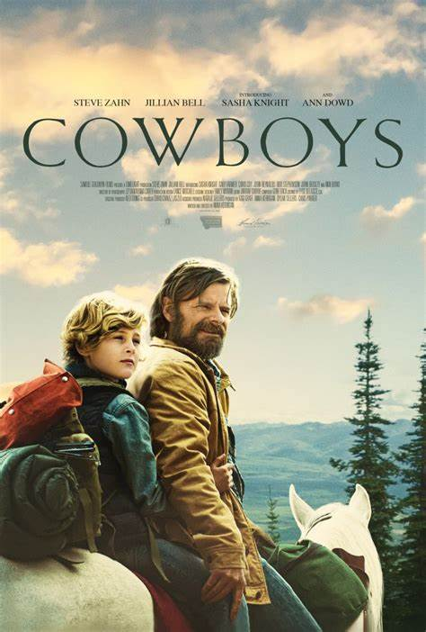
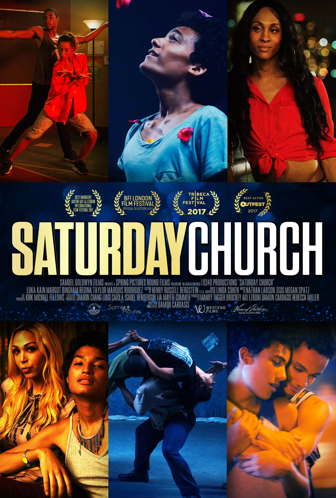
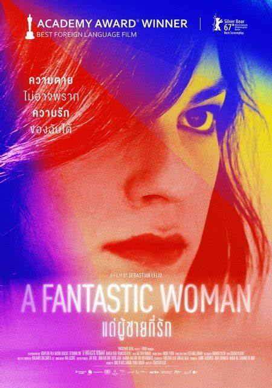

Disclosure
From executive producer Laverne Cox and director Sam Feder comes Disclosure, a documentary that chronicles over 100 years of trans representation on screen, from silent film to Dog Day Afternoon, The 40-Year-Old Virgin to Pose.
Transfinite
Transfinite is a sci-fi omnibus feature film composed of seven standalone short stories where supernatural trans and queer people from various cultures use their powers to protect, love, teach, fight and thrive.
The Aggressives
A pioneering documentary filmed in NYC from 1997-2004 follows a group of "Aggressives," or "AG's" - masculine presenting and/or identifying - queer POC who were assigned female at birth.
Cowboys
A troubled but well-intentioned father who has recently separated from his wife runs off with his trans son into the Montana wilderness after his ex-wife's refusal to let their son live as his authentic self.
Saturday Church
A 14 year-old-boy, struggling with gender identity and religion, begins to use fantasy to escape his life in the inner city and find his passion in the process.
A Fantastic Woman
Marina, a transgender woman who works as a waitress and moonlights as a nightclub singer, is bowled over by the death of her older boyfriend.